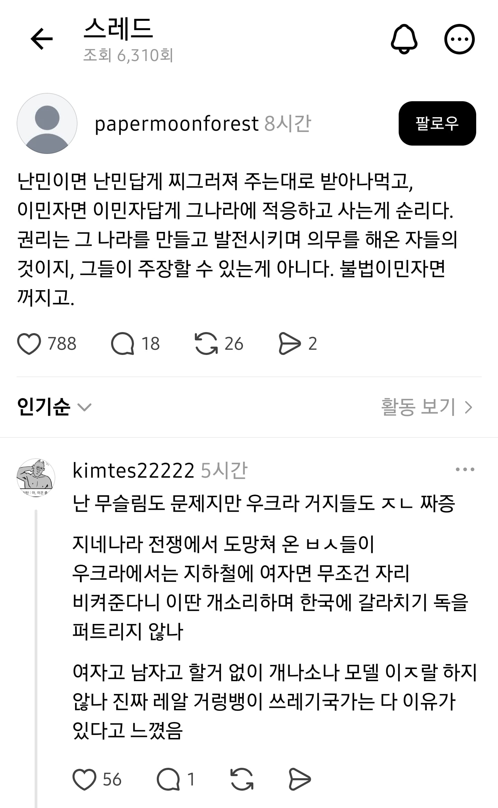

요즘 우크라 러시아쪽 물체자도 엄청 많더라

요즘 우크라 러시아쪽 물체자도 엄청 많더라
발언 존나 시원하네
쪼오끔 극단주의자들 먹이감이긴 한데, 썩 틀린 이야긴아니지. 나도 영주권자이긴하지만 항상 이방인 마인드로 살거든. 근디 애초 그런 양심이나 뭐 기대할 만한 교육수준이 안돼..그 사람들은..
극단주의자 먹이감이 아니라 그냥 저들이 극단주의자 아니야?
미디어에서 보는 로켓런쳐 들고 다니는 애들 말고..인도네시아나..다른 아시아에 있는 애들도 많어.. 걔들은 심지어 기독교나 여타 종교도 인정함...
보통 그런 국가 출신들은 난민이 아니잖음
아 내가 말한 저들은 무슬림이나 이민자들이 아니라 스레드에 글 쓴 저 사람들을 말한 거였음
난민 받지 말자, 들어온 난민 죄다 체포해서 추방하자는 현실 극단주의자들이 멀쩡히 있는데 글쓴 애는 표현이 강할뿐 전혀 극단이 아니잖아
ㄹㅇ 고려인들 빠는 애들 이해 안돼
조선때 나라버리고 대한민국 잘되니 또 버리는 민족 아냐?
미친소리 하고 앉아있네 정말..
혹시 할애비 유품 중에 일제훈장이라도 있냐?
고아임?
강제로 이주된사람한테 뭔소리하는거임?
이런말은 초등학생 애들도 안하는데 거 학교는 나온거 맞지?
한번 찾아본적도 없네
니 논리대로면 윤동주도 나라버리고 튄 사람임 ? ㅋㅋ
이거 개또라이네
너 고려인의 원류가 뭔지도 모르지?
역알못인 나도 아는데
탈북한 사람보고 나라 버린 배반자라는 새끼들도 있는곳이 개드립임ㅋㅋㅋㅋㅋㅋ
한국인이 이방인으로써 깽판칠일이 있나
미국에서도 조용히 슈퍼만 운영하고 전문직하지
이 개새끼들은 어느나라를 가든 기생충이고
ㄹㅇ. 나도 만약에 자의든 타의든 남의 나라에 난민이나 이민을 갔으면 니 말마따나 이방인 마인드로 살거 같은데.

이방인의 올바른 태도는 순응하고 수용하는거임
factos
애초에 무슬림 종교 자체가 우리 종교 안믿으면 모두 이단이고 그 이단들을 약탈하거나 개짓거리 해도 됨 ㅇㅇ 이러지 않나
그런 종교를 이해하고 배려해 달라고? 앰뒤소리지 ㅇㅇ
과거 제국주의 국가들이 행한 업보 같은게 없는 우리나라는 '그런' 난민 받을 이유가 없음. 국제사회의 일원 어쩌구 는 해야하니 받더라도 최대한 걸러서 받아야함
ㄹㅇ우리는 제국주의의 업보가 없지
625참전국 후손들이 난민이나 이민자로 오면 걔들은 포용가능한데 우리랑 하등 관계 없는 새끼들이 지랄하는건 좆같네 좀
심지어 우크라는..
로마에 가면 로마법을 따르라
로마에 왔으면 로마의 법을 따라야지
느그 법 좋아하면 느그 나라로 돌아가 방빼새꺄
스레드글에 뭘 바라겠냐만은 맥락을 보면 특권(Privilege)이랑 권리(right)를 구분못하는거 같음
아메리카대륙까지 갈필요도 없이 유럽자체가 서로 이민 오고가고 하면서 발전시킨 나라들인데 쟤 논리면 권리 주장 할수있는거 아님?ㅋㅋㅋ
서구권 평균이 저런 애들이였으면 아직도 백인이랑 유색인종 화장실 나뉘어져있었을듯
이 새끼들은 초반에 잡아야 됨.
뭐 인간적으로.. 뭐 관용의.. 그딴 개소리하다가는
어느순간 말하는 짐승들이 지들 안방 마냥 행동한다.
애초에 못오게 하던지, 지랄하는 놈들은 추방이라도 시켜야함
이게 1세대면 저게 되는데 2,3세대가 될수록 아이러니하게도 저 마인드가 잘 안됨
2,3세대는 분명 자기나라에서 태어난 자기나라사람인데 평생 이방인으로 사는거니 분노할수밖에 없음
맞음. 자기도 이 나라 사람인데 차별받는다라 생각해서 불만이 생기고 적응못해서 저학력인 사람이 많음. 문제는 그러면 범죄로 빠지기 더 쉬워짐
나라 망해서 튄 새끼들 받아주는게 무슨 의미가 있나
튈 여력이 있는 놈들 그렇게 튀면 튈수록 그 나라는 더 망해갈텐데
받아줘봤자 여기 망하면 또 튈놈들이고
트럼프가 괜히 뽑힌게 아니네ㅋㅋㅋ 난민에 부정적인거랑 난민을 혐오하는거랑 구분못하겠으면 그게 바로 마가지 뭐
현역병 전역후 6형제 낳아서 기르는 난민
Vs
무출산 무의무 지원금타먹는 내근직 여경
이면 난 전자 응원할거같은데
난민(알라후앜발)
한녀(한남재기해)
정답이다 연금술사
난 개인적으로 한국에 있는 백인 애들도 싫어하는 편임.
진짜 백인이기만 하면 주변에서 하도 빨아주고, 심지어 모델일까지 제안받으니 콧대가 하늘을 찌름.
내가 어릴 때 해외에서 살았고, 영어 학원 관련된 일도 해봐서 외국인 친구들 많았는데 흑화(?)하는 애들에 질려서 이제 안 사귐.
아 근데 얘네보다도 백인이랑 사귄다고 or 백인이랑 친구라고 자랑하고 싶어하는 애들이 더 극혐임 ㅋㅋ ㅇㅈㄹ하니 한국 사람들 쉽게 보고, 뒤에서 비하발언 ㅈㄴ 하지
오히려 한국 사는 동남아 애들이 착한애들 개많았음...
뭔 동남아가 착한애들이 많아 별 시발ㅋㅋ
많긴 많음...
일부가 씹창이라 크게 보이는거지
공장이나 논 밭 같은데 순박한 친구들 많음
초코파이 야참으로 주면 고맙읍니다도 함
한국인 이민자들이 지역사회에 정착할 경우 존경받는 이유를 생각해보자
생각해보면 우리는 적응하려는 노력이 당연하다고 여기고 살았는데 말이야.
정작 외국놈들이 한국와서 눈치라도 보는게 진짜 요 근래 일이지 여태 나가서도 우리기 맞춰줘 우리 안방에서도 다해줘.. 열받네 어?
쓰레드가 맞말을..?
다인종 국가는 몰라도 다문화 국가는 안된다
댓글에 다른 나라의 이민정책이랑 우리나라랑 같은 잣대로 보려는 이상주의자들 많네 ㅋㅋ 우리나라는 위쪽 동네 문제 터지면 그 인구 그대로 이민자 발생한다고요...
대부분 1세대들은 조용히 삶 2~3세대가 왜 이방인 취급받냐 이거지
팩트)다